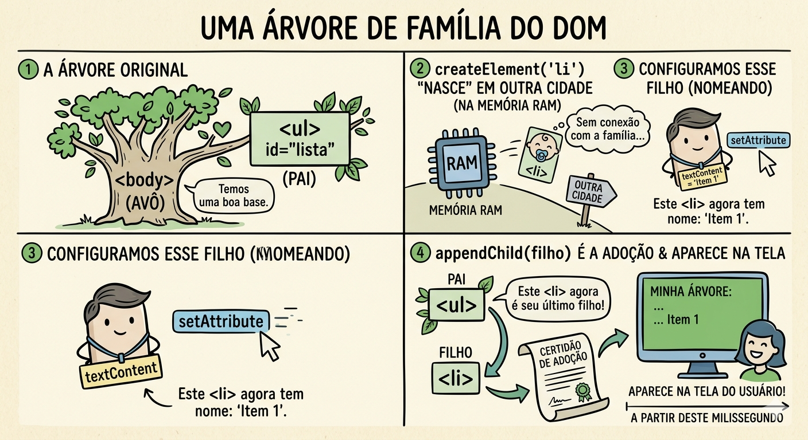
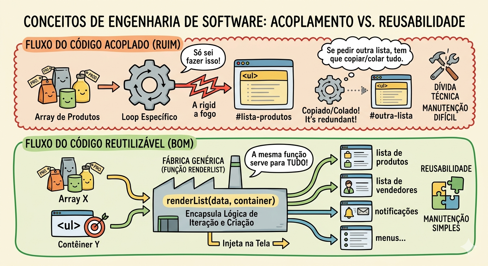

Descrição: Exposição de createElement, appendChild e removeChild. Prática de renderização de listas dinâmicas a partir de um array. Criação de função genérica renderList(items, container) e atividade em grupo focada em hierarquia do DOM com a construção de uma tabela dinâmica de produtos.
Pense na interface da Netflix, do Mercado Livre ou no feed do Instagram. Quando rolamos a página ou pesquisamos por "notebooks", os resultados aparecem na tela sem que a página inteira recarregue. Nos bastidores, a aplicação está recebendo dados (geralmente em formato JSON) e construindo o visual em tempo real.
Se os desenvolvedores dessas plataformas tivessem que escrever o HTML estático de cada produto manualmente, a manutenção seria impossível e a escalabilidade, nula. No mercado atual, dominado por Single Page Applications (SPAs) e consumo de APIs, a habilidade de ler um conjunto de dados brutos e transformá-los dinamicamente em elementos visuais na tela é o coração do desenvolvimento Front-end.
Hoje, deixamos de ser apenas "escritores de HTML" para nos tornarmos arquitetos de interfaces dinâmicas.
"Se você precisasse exibir uma lista de 500 produtos em uma página, e fizesse isso escrevendo as tags <li> manualmente no HTML, qual seria o maior risco técnico e financeiro para a empresa caso a classe CSS de todos os itens ou a regra de desconto mudasse de repente?"
Essa analogia da Árvore de Família explicada na aula anterior é uma das melhores formas de entender o que acontece nos bastidores do navegador. Para explicar como isso funciona na prática, vamos dividir o "nascimento" desse elemento em três etapas fundamentais. Imagine que estamos em um canteiro de obras digital:
Quando você executa document.createElement('li')o JavaScript reserva um espaço na memória RAM.
Antes de apresentar o novo filho à família, você precisa dizer quem ele é. É aqui que definimos o textContent, adicionamos classes (classList.add) ou definimos IDs.
JavaScript
const novoFilho = document.createElement('li'); // Nascimento
novoFilho.textContent = 'Item 1'; // Nome e Identidade
novoFilho.style.color = 'blue'; // AparênciaNesse ponto, o elemento já está "pronto", mas ainda é invisível para o usuário final porque ele não está conectado ao <body> (o avô).
Esta é a etapa crucial. O método appendChild() é o aperto de mão entre o que está na memória e o que aparece na tela.
Ficou clara a diferença entre o elemento existir na memória e existir na página? O comando de criação acontece exclusivamente no lado do cliente (no navegador do usuário) e o momento exato depende de como você configurou o seu código JavaScript.
Para ser bem didático, vamos separar o "Onde" do "Quando":
O comando não viaja para a internet. Ele é enviado para a Engine de JavaScript do navegador (como o V8 no Chrome ou o SpiderMonkey no Firefox).
Existem três cenários comuns para esse "nascimento":
Imagine o console do navegador como o "centro de comando":
Se o comando fosse enviado para o servidor toda vez que você criasse um elemento simples, a internet seria incrivelmente lenta. Como ele é enviado apenas para a memória local, o processo de criar um elemento e exibi-lo leva, geralmente, menos de 1 milissegundo.
Faz sentido pensar que o JavaScript é como um "mestre de obras" que já está dentro da casa (o navegador), pronto para agir sem precisar ligar para o arquiteto (o servidor) para cada tijolo novo?
Imagine uma árvore de família.

JavaScript
// 1. Selecionamos o elemento pai que já existe no HTML
const listaProdutos = document.querySelector('#lista-produtos');
// 2. Criamos um novo nó do tipo Element (uma tag <li> vazia na memória)
const novoProduto = document.createElement('li');
// 3. Adicionamos conteúdo e classes de estilo ao novo nó (Segurança: textContent em vez de innerHTML)
novoProduto.textContent = 'Monitor UltraWide 29';
novoProduto.classList.add('item-produto');
// 4. Conectamos o novo nó à árvore do DOM (inserindo no final da lista)
listaProdutos.appendChild(novoProduto);Dica: O uso de IA Generativa (como o ChatGPT ou Gemini) pode acelerar a escrita de templates de inserção, mas atenção: IAs costumam sugerir o uso de innerHTML += "<li>...</li>" por ser mais curto. Isso é uma péssima prática de mercado, pois recria todo o DOM interno a cada iteração, destruindo event listeners antigos e abrindo brechas de segurança (XSS). Use sempre a criação de nós (createElement).
Essa é a conclusão lógica do ciclo de vida que começamos a estudar. Se o appendChild é a "adoção", o remove é a "emancipação" ou a saída estratégica de cena. Aqui está a explicação de como isso funciona na prática:
Quando você remove um elemento, você está cortando os fios que o ligam à Árvore do DOM.
Imagine que você quer expulsar um convidado de uma festa, mas, por uma regra estranha, você não pode falar com ele; você precisa achar o dono da casa e pedir para ele expulsar a pessoa.
É a autonomia total. O elemento recebe a ordem e ele mesmo se retira da árvore.
Já mencionamos os Memory Leaks (Vazamentos de Memória). Imagine que seu site é uma lista de tarefas. Se você "deleta" 100 tarefas da tela usando truques visuais (como esconder com CSS), mas não as remove do DOM, o navegador continua gastando energia e memória para processar esses itens invisíveis. Remover o nó garante que o navegador pare de se preocupar com aquele pedaço de código, mantendo o site leve e rápido, especialmente em celulares.
Uma das melhores formas de ver isso funcionando é criar um elemento que se deleta ao ser clicado:
JavaScript
const item = document.createElement('li');
item.textContent = 'Clique em mim para eu sumir';
// Ao clicar, o próprio elemento executa o comando de saída
item.addEventListener('click', () => {
item.remove();
});
document.querySelector('ul').appendChild(item);Faz sentido como o ciclo se fecha? Agora você sabe criar, configurar, dar um endereço e, quando necessário, dar o "cartão vermelho" para um elemento!
Essa é a transição do "codificador amador" para o Engenheiro de Software. O conceito aqui é transformar uma tarefa manual e repetitiva em uma máquina de automação. Imagine que você é um carpinteiro. Em vez de fabricar uma cadeira do zero toda vez (medir, cortar, lixar, montar), você constrói um molde (a função). Agora, sempre que alguém quer uma cadeira, você só joga a madeira no molde. Veja como isso funciona na prática, dividindo em três pilares:
Quando você escreve um código preso a um ID específico (como #lista-produtos), você criou um especialista que só sabe fazer uma coisa. Se amanhã você precisar listar "Clientes", esse código é inútil. Você teria que copiar e colar, mudando apenas o nome das variáveis.
A função renderList age como um serviço de entrega. Ela não quer saber o que está dentro da caixa (os dados) nem onde fica a casa (o contêiner). Ela apenas sabe como realizar a entrega.
Os Parâmetros como "Contratos":
O jeito repetitivo (Amador):
JavaScript
// Código preso ao produto
produtos.forEach( p => {
const li = document.createElement('li');
li.textContent = p.nome;
document.getElementById('lista-produtos').appendChild(li);
});O jeito Reutilizável (Engenharia):
JavaScript
function renderList(dados, conteinerPai) {
// Limpamos o pai para evitar duplicatas (Reset)
conteinerPai.innerHTML = '';
dados.forEach(item => {
const li = document.createElement('li');
li.textContent = item;
conteinerPai.appendChild(li);
});
}
// Agora a mesma função serve para TUDO:
renderList(meusProdutos, listaDeProdutosDOM);
renderList(vendedores, listaDeVendedoresDOM);Em resumo: Você deixa de escrever o que fazer em cada detalhe e passa a escrever como as coisas devem ser feitas de forma geral. Ficou claro como essa "fábrica de listas" economiza o seu tempo e o processamento do navegador?
Fluxo do Código Acoplado (Ruim):
Array de Produtos -> Loop Específico -> Conectado a fogo em #lista-produtos. (Se pedir outra lista, tem que copiar/colar tudo).
Fluxo do Código Reutilizável (Bom):
Array X + Contêiner Y -> renderList(data, container) -> Injeta na Tela. (A mesma função serve para produtos, vendedores, notificações, menus...).

Reflita: Soft Skill de Comunicação Técnica. Como você explicaria para o seu Gerente de Projeto que atrasou a entrega em 1 hora porque precisou "refatorar" a função de listar elementos? A justificativa correta não é "porque o código está feio", mas sim "para diminuir o tempo de entrega das próximas 10 listas do projeto e evitar bugs de inconsistência visual".
Para entender o código completo do nosso Sistema de Inventário, precisamos olhar para ele com a mentalidade de um Engenheiro de Software. Na nossa aula, vimos que manipular o DOM não é apenas sobre jogar elementos na tela, mas sim sobre sincronizar dados com a interface.
Vamos desconstruir o código passo a passo, conectando tudo o que aprendemos hoje: Mock Data, criação de elementos (createElement), aninhamento (appendChild) e deleção.
No topo do nosso script, temos a variável mais importante:
JavaScript
let dadosProdutos = []Este Array é a "fonte da verdade". Na vida real, ele começaria preenchido com dados vindos de um Banco de Dados. Em nossa aplicação, tudo o que o usuário vê na tela é apenas um reflexo visual (um "espelho") do que está dentro desse Array.
Essa é a nossa função genérica. Ela é responsável por ler a "fonte da verdade" e traduzi-la em elementos visuais.
JavaScript
const btnDeletar = document.createElement('button');
btnDeletar.onclick = () => {...}Quando o usuário clica em "Salvar Produto", o código não cria o elemento na tela imediatamente. Ele segue um fluxo de trabalho rigoroso:
Na aula, vimos o removeChild e o .remove(). Mas, em um sistema guiado por dados (Data-Driven), nós não apagamos o elemento HTML diretamente. Nós apagamos o dado!
Quando o usuário clica no botão "Remover" forjado pela nossa fábrica, acontece o seguinte:
JavaScript
dadosProdutos.splice(index, 1);
renderizarTabela();Resumo da Ópera: O HTML fornece a casca. O JavaScript fornece a inteligência. Nós nunca mexemos na interface diretamente quando queremos adicionar ou deletar; nós alteramos o Array e pedimos para a função de renderização atualizar a tela. Esse é o coração da manipulação moderna do DOM!
Abram o Console do Desenvolvedor (F12), vão na aba Elements e cliquem nas setinhas para expandir o <tbody>. Vocês verão exatamente a estrutura que o JavaScript "fabricou". Se deletarem um item do Array e chamarem a função novamente, verão a mágica da atualização dinâmica acontecer!
Pergunta: Qual a diferença entre appendChild e append? Qual devo usar?
Resposta: O appendChild insere apenas um único objeto do tipo Node (nó) e retorna o próprio nó inserido. O append (mais moderno) aceita múltiplos nós ou até mesmo strings diretas (ex: pai.append(div, "Texto solto")), mas não tem valor de retorno. Em ambientes puristas e com grande exigência de compatibilidade e controle rigoroso, appendChild é mais seguro. Para agilidade moderna, append é amplamente utilizado.
Pergunta: Fazer muitos appendChild dentro de um loop de 10.000 itens trava a página?
Resposta: Sim! Toda vez que você altera o DOM visível, o navegador aciona um processo chamado Reflow e Repaint, o que é muito custoso em processamento. Para listas gigantes, usamos uma técnica avançada chamada DocumentFragment - uma "caixa invisível" onde anexamos os milhares de itens na memória primeiro e, no final, anexamos a caixa inteira ao DOM (1 único Reflow).
Pergunta: Posso usar innerHTML com crases (Template Literals) para montar a tabela? Não é mais fácil?
Resposta: É mais rápido de digitar, mas péssimo para a qualidade de software. O innerHTML destroi todo o contêiner para recriá-lo como texto. Isso mata eventos de clique (addEventListener) previamente ligados, causa recarregamento de imagens aninhadas e abre as portas do seu sistema para Cross-Site Scripting (XSS), a principal falha de segurança na web. Prefira sempre criar os nós.
Pergunta: Se eu mudar um valor no meu Array de dados, a tabela atualiza sozinha?
Resposta: No Vanilla JS, não. O array e o DOM são entidades separadas. Após alterar o dado no Array (ex: .push({novoDado})), você é obrigado a chamar a função renderList ou renderizarTabela novamente para sincronizar a tela com os dados atualizados. Bibliotecas como React nasceram justamente para automatizar essa reatividade.
Pergunta: Meu createElement está gerando a tag na tela, mas sem conteúdo, mesmo eu colocando node.value = 'Texto'. Por quê?
Resposta: Depende da tag. Elementos estruturais (div, p, li, td) usam textContent (ou innerText) para o texto entre a abertura e fechamento da tag. Já elementos de formulário (como um <input>) usam a propriedade .value.
Para garantir que nosso código tenha qualidade e manutenibilidade, fechamos esta aula com o seguinte checklist:
Contexto: O usuário acabou de adicionar um produto no nosso sistema de gestão. Precisamos dar um feedback visual rápido para ele.
Missão: Crie um script dinâmico dentro da função adicionarProduto() que forja um elemento <div>, aplica uma classe CSS alert-success, adiciona o texto "Produto cadastrado com sucesso!" usando a propriedade correta e anexa ao contêiner principal da página usando appendChild.
Entrega: Trecho de código JavaScript funcional.
Contexto: Se o usuário digitar um preço inválido, nosso sistema mostra um alerta de erro na tela com o id #erro-validacao. Quando ele corrigir, o erro deve sumir.
Missão: Selecione este elemento #erro-validacao via JS e elimine-o definitivamente do DOM utilizando a API nativa. Se certifique de fazer a validação para que não dê erro se o alerta já não estiver lá.
Entrega: Código JS (Máximo de 3 linhas).
Contexto: Nosso backend em PHP enviou um JSON com as categorias dos produtos para colocarmos no formulário de cadastro.
Missão: Dado o array const categorias = [{id: 1, nome: 'Eletrônicos'}, {id: 2, nome: 'Móveis'}], crie uma função genérica que recebe essas categorias e itera sobre elas construindo tags <option>, configurando as propriedades value (com o ID) e textContent (com o nome). Em seguida, as anexe dentro de um <select id="categoria">.
Entrega: Função de iteração completa criadora de múltiplos atributos DOM.
Contexto: Seu colega Dev Júnior tentou adicionar um rodapé com o total de itens no final da tabela e fez uma função engessada: function gerarRodape() { document.querySelector('.container').innerHTML += "<div class='rodape'>Total atualizado</div>" }.
Missão: Refatore o código desse colega. Remova o acoplamento e, principalmente, remova a falha de injeção trocando innerHTML += por criação de nós nativa (createElement).
Entrega: Função refatorada com boas práticas (Clean Code).
Contexto: O cliente pediu um botão de pânico para zerar o inventário inteiro de uma vez.
Missão: Programe uma função limparEstoque() que esvazia completamente o array dadosProdutos (nosso estado) e IMEDIATAMENTE chama a sua função renderizarTabela() feita anteriormente para atualizar a interface.
Entrega: Lógica que demonstra o Gerenciamento de Estado simples no JS.
Contexto: A tabela de produtos agradou o cliente, mas agora ele quer uma nova ação direto por lá.
Missão: Modifique a função renderizarTabela. Ao lado do botão "Remover" que já existe na quarta coluna, crie um novo botão (button). Coloque o texto "Editar" neste botão e anexe-o na mesma célula (td).
Entrega: A nova função renderizarTabela incluindo o novo nó sendo processado hierarquicamente.
Contexto: Continuação do exercício anterior. Precisamos garantir que o sistema avise qual produto está sendo manipulado.
Missão: Adicione um evento de clique (addEventListener ou .onclick) ao botão "Editar" que você gerou lá dentro do loop do forEach. Quando clicado, o botão deve capturar o escopo e dar um alert() exibindo exatamente o produto.nome daquela respectiva linha mãe.
Entrega: O bloco de código que combina a criação do nó com a anexação imediata de um evento nele antes de ir pro DOM.
Contexto: Seleção de Categoria e Subcategoria no formulário de cadastro.
Missão: Você tem um objeto aninhado: const subcategorias = { "Eletrônicos": ["Notebook", "Mouse"], "Móveis": ["Cadeira Gamer"] }. Crie uma função que lê a chave selecionada no input de categoria e popula dinamicamente (usando nó <option>) a tag <select id="subcategorias"> apenas com os itens pertinentes àquela categoria, garantindo que você zere/limpe a lista antes de adicionar as novas subcategorias.
Entrega: Lógica complexa combinando busca em objeto aninhado e re-renderização de DOM.
Contexto: O cliente quer um botão para alternar a visualização da Tabela para um formato de "Catálogo Visual".
Missão: Dado o nosso array dadosProdutos, crie dinamicamente uma estrutura mais profunda que a tabela. Você deve montar: <div class='card-produto'> contendo um <h3>Nome do Produto</h3> que é irmão de um <p>Preço</p>. Inserir tudo em uma <section id="galeria">.
Entrega: Script rigoroso demonstrando a habilidade de montar ramificações laterais sem errar de pai.
Contexto: Um estagiário sugeriu que, na função renderizarTabela, ao invés de usar appendChild, o código deveria fazer tbody.innerHTML += "<tr>...</tr>" dentro do forEach para poupar linhas.
Missão: Explique do ponto de vista de Engenharia de Software por que remontar a tabela dessa forma abrupta a cada iteração destrói o conceito de sincronização , causa problemas de performance e por que é uma péssima prática de mercado.
Entrega: Um parágrafo argumentativo de alto nível técnico (Soft Skill de Code Review).
Conexão com a Situação de Aprendizagem (SA): Esta aula é o esqueleto da interface do nosso projeto final. O sistema de CRUD (Criar, Ler, Atualizar e Deletar) que vocês vão desenvolver precisará listar os registros do banco de dados na tela, como a listagem de usuários e serviços. Em breve, a Linguagem PHP trará esses dados do banco para o Frontend, e a função genérica renderizarTabela e as iterações de manipulação do DOM que escrevemos hoje serão responsáveis por apresentar toda essa informação ao cliente final de forma responsiva, dinâmica e sem gargalos de performance. Dominar esse conceito evita código repetido e garante requisitos de qualidade de software na auditoria final (Black-box).
A tabela que fizemos hoje está muito bonita, mas é "muda". Nós inserimos dados na tela, mas como sabemos quando o usuário interage com eles? Na próxima aula, vamos dar vida e interatividade a essa estrutura avançando no poder do JavaScript Client-Side: o mapeamento de Eventos (Clicks, Teclado, Formulários).